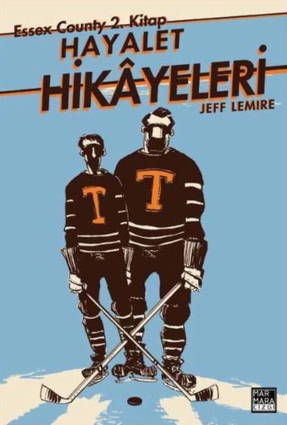

Essex County 2
Çeviren
Marmara Çizgi
Dil
Tr
Ne hakkında?
Hayalet Hikâyeleri, Lou ve Vince Lebeuf kardeşlerin neredeyse yetmiş yıla uzanan hayatlarını ve birbirleriyle olan
ilişkilerini bizlere anlatıyor. Artık yaşlı, sağır ve yalnız bir adam olan büyük kardeş Lou, hayatının son günlerini
kendi çiftliğinde, geçmişte verdiği kararlar yüzünden ailesinin parçalanmasının suçluluğunu ve pişmanlığını
omuzlarında hissederek geçiriyor. Çocukken çiftlikte yaşadıkları günlerden iki kardeşin de profesyonel hokey
oynadığı 1950'lerin Toronto'suna kadar, Lou hayatını tekrar gözden geçiriyor ve kendi anılarına sessiz bir izleyici
olarak konuk oluyor.